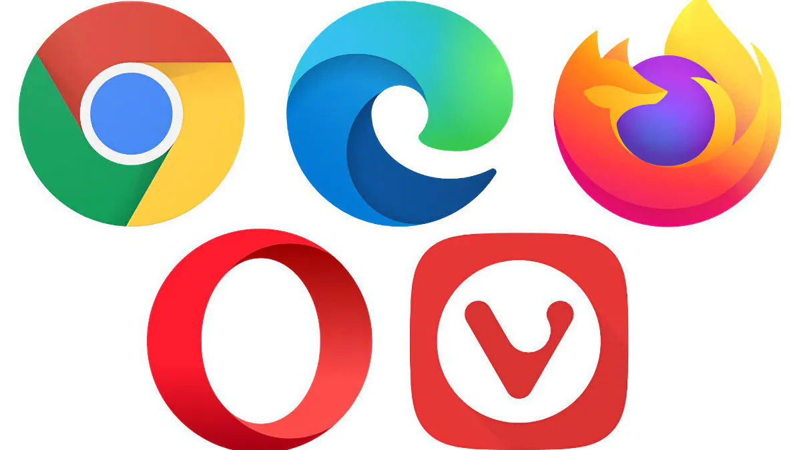

Browser
Un consiglio utile per la privacy è di fare attenzione al browser utilizzato.
Considerando le prestazioni, Google Chrome è il migliore ma raccoglie molte informazioni sulle ricerche effettuate (profilazione).
Un browser consigliato è Mozilla Firefox: offre una buona privacy, blocca tracker e fornisce una protezione efficace contro phishing e malware.